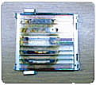
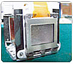
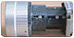
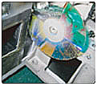

대한민국 No.1
프로젝터 램프회사 ㈜솔포스텍 램프의 정밀광학 클리닝 안내입니다.
사용환경에 따라 차이는 있지만, 프로젝터 램프로 인해 발생된 내부온도를 낮추기 위해서 쿨링팬을 통해 외부로 부터 유입되는 공기 속에, 먼지나 담배연기 등 이물질이 함께 들어오게 됩니다. 이때 내부의 고열로 인해 렌즈나 기타 광학 부품 등 전자기판에 이물질이 흡착이 되어, 화면이 흐리게 보이고, 색상중간에 검붉은 자국이 보이며, 램프 사용시간에 비해 밝기가 현저히 떨어집니다.
이럴 때는 반드시 클리닝을 해야 하며, 그대로 방치할 경우, 찌들어 붙은 오염물질로 인해 LCD 및 각종글라스 부품들이 열화되어 교체해야 하는 심각한 상황이 발생할 수 있습니다. 프로젝터는 매우 정밀한 전자기기 및 광학기기이므로, 클리닝은 반드시 전문가에 의하여 기기 내부를 완전히 분해하여, 특수 장비와 용액을 이용하여 세척하는 고난이도 작업입니다.
| 오염된 부품 | 구성부품 | 기능 | 클리닝 필요성 |
|---|---|---|---|
|  | 멀티렌즈 | 램프의 빛을 굴절시키는 기능을 합니다. | 램프와 가장 가까운 글라스로서 램프열에 의해 먼지가 눌러붙어 그을리게 될 수 있습니다. |
| PBS 글라스 | 장시간 켜두면 PBS렌즈가 열을 견디지 못하고 파손되거나, 소홀한 관리로 먼지 등에 의해 훼손될 수 있음 | ||
|  | 반사경 | 램프를 통해 들어오는 빛을 분해하여 LED 액정까지 도달할 수 있도록 합니다. | 빛을 투과시키는 장치의 상태가 양호하지 않으면 특정 색상이 흐리게 나옵니다. |
| LED 패널 폴라로이드 글라스 |
LED 패널은 RED, GREEN, BLUE 세 가지로 구성되어 있으며, 시각정보를 변환시켜 전달하는 매우 중요한 역할을 합니다. | 파손되면 수직으로 줄이 생기거나 화면이 점처럼 보일 수 있고, 특정색상이 안나올 수 있습니다. | |
|  | 렌즈 | 빛을 스크린에 쏘아주는 기능을 합니다. | 필터로도 여과되지 않는 미세먼지가 렌즈의 부분을 오염시켜 화질을 떨어뜨리는 원인이 됩니다. |
|  | 칼라휠 | 램프에 의해 쏘아진 빛이 칼라 휠을 통해 DMD칩까지 전해져 색상을 구현합니다. | 빛이 통과하는 칼라휠에 미세먼지가 끼면 색감이 제대로 표현되지 않습니다. |
| FAN | 램프로 인해 내부온도가 300도에 이르게 되는 것을 외부의 찬공기를 이용하여(공냉식) 외부로 발산하는 역할을 합니다. | 먼지로 인해 팬 내부 모터가 동작되지 않으면 내부 온도상승으로 갑자기 꺼지는 현상이 발생할 수 있습니다. |
-
프로젝터 밝기 개선
각 부품이 깨끗해야 빛이 투과되는데 장애가 없습니다.
-
프로젝터 수명연장
램프 열에 의해 주요 부품이 파손 될 수 있습니다.
-
프로젝터의 유지 보수비 절감
주요부품은 고가입니다.
파손되어 수리가 불가능하면 고가의 부품을 교체해야 합니다.
먼지는 열화현상의 원인입니다. 이미 열화현상이 진행된 패널은 복구가 어렵습니다. 따라서 열화현상이 진행되기 전에 정기적으로 정밀광학클리닝 서비스를 받으시기를 권해드립니다. 6개월마다 한번씩 하시는 것을 권장해 드리며, 최소 1년에 한번 정도씩은 정밀광학클리닝 서비스를 받으셔야 고가의 프로젝터를 수명이 다 할때까지 최적의 성능으로 사용하실 수 있습니다.
흔히 프로젝터를 사용하는 고객들께서 진공청소기로 여기저기 먼지를 빨아들이는 경우가 많은데, 이는 오히려 내부에 흡입되어 가라앉아 있는 먼지를 다시 한 번 불어 일으켜 글라스 부품에 뭍히는 역효과를 낼 수 있으므로 청소기로는 주기적으로 필터 청소만 해주셔야 합니다.